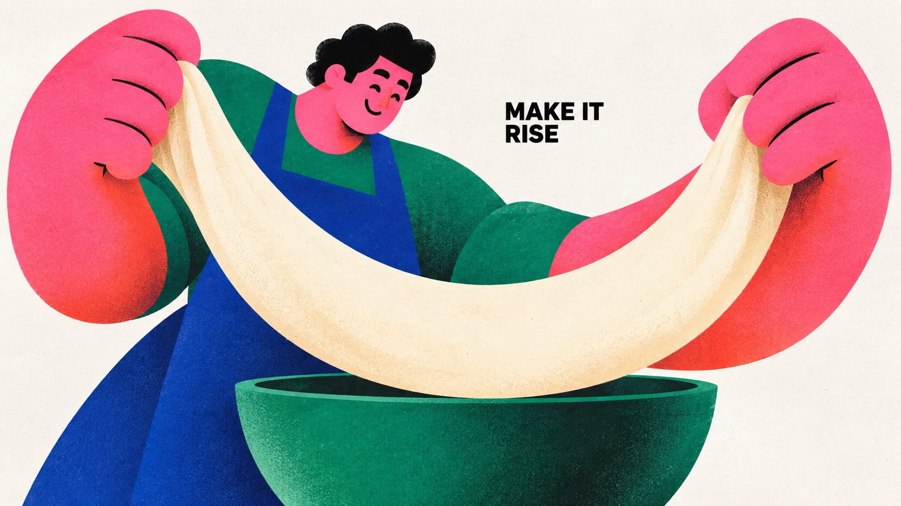
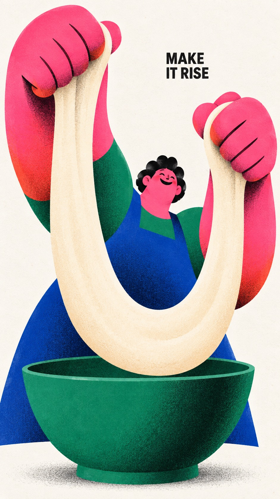
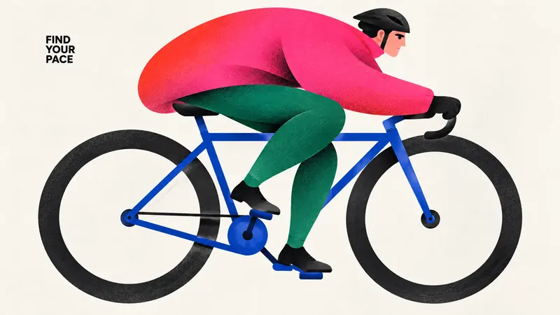
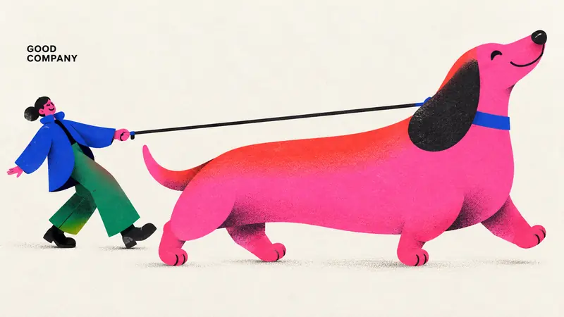
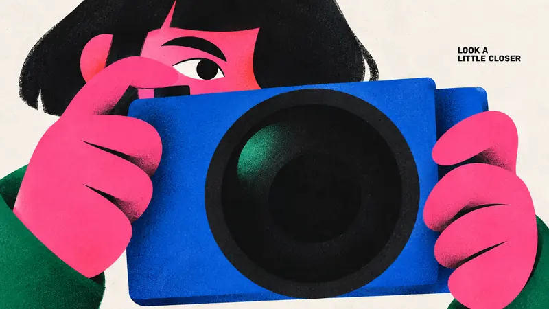

Type Posters · AI image style prompt
Chromatic Gesture Characters — Part 2
Part 2: bread baking, cycling, dog walking and photography in exaggerated geometric figures, hot-pink clashes and grainy print texture.


4 example cases
Same style.json, different subjects. Each case's values are in the examples section of the JSON.



What this style does
Part 2 of Chromatic Gesture Characters: the same exaggerated geometric figures, hot-pink clashes, airbrushed shadows and fine print grain, now built around bread baking, cycling, dog walking and photography.
Signature traits
- Build a monumental, asymmetric character silhouette from few interlocking circles, flattened capsules, wedges, tapered limbs and large flowing contour cuts; enlarge anatomy according to the emotional gesture.
- Use nearly black, radically reduced facial marks and weight-bearing accents; eyes, brows and mouth read as deliberately cut graphic shapes rather than detailed drawing.
- Pair a dominant hot pink or magenta color field with one adjacent warm red or coral gradient and two saturated cool counterweights, on an open off-white paper ground.
- Keep most shapes flat and crisply bounded, with localized dark-to-color airbrushed shading at overlaps or bends and the specified fine print texture; depth must remain graphic.
- Let the character-object interaction carry the poster; sparse small bold black uppercase sans-serif copy occupies a useful pocket of negative space.
- Change pose, gaze, crop, size relationships and title location to make the action legible; a full body, profile crop, enclosing gesture or reclining arrangement are equally valid.
style.json
{
"style_version": "1.0.0",
"style_name": "Chromatic Gesture Characters — Part 2",
"style_slug": "chromatic-gesture-characters-part-02",
"style_summary": "Part 2 of Chromatic Gesture Characters: the same exaggerated geometric figures, hot-pink clashes, airbrushed shadows and fine print grain, now built around bread baking, cycling, dog walking and photography.",
"environment_variables": {
"ASPECT_RATIO": "9:16 or 16:9",
"STYLE_FIDELITY_ANCHORS": "Runtime joined CORE and FLEX anchors from this spec",
"SOURCE_CONTENT_TO_AVOID": "Runtime joined source-specific content exclusions",
"SUBJECT": "New character identity and a small number of theme-bearing objects",
"ACTION": "Readable physical interaction and emotional expression",
"DESIGN_DIRECTION": "The case concept and its visible contribution to hierarchy and silhouette",
"PALETTE_DIRECTION": "Roles of saturated colors within the shared chromatic system",
"MAIN_TEXT": "Only visible wording, exact uppercase spelling without added punctuation",
"PORTRAIT_PLAN": "Composition intention for the 9:16 image",
"LANDSCAPE_PLAN": "Composition intention for the 16:9 image",
"SUBJECT_ACTION": "the readable physical interaction and emotional expression described in ACTION",
"PRODUCT_OR_PROP": "one or two oversized theme-bearing objects that join the character silhouette",
"LOCATION": "edge-to-edge off-white paper with no scene; depth implied only by overlapping shapes",
"BACKGROUND_ELEMENTS": "bare paper gaps, selective grainy airbrushed shadow and the small black caption",
"SECONDARY_TEXT": "none; MAIN_TEXT is the only visible wording",
"ACCENT_SYMBOL": "the minimal black cut-paper facial marks",
"WARDROBE_STYLE": "flat sculptural garment blocks in hot pink, coral red, cobalt and emerald"
},
"style_fidelity_anchors": [
"[CORE] Build a monumental, asymmetric character silhouette from few interlocking circles, flattened capsules, wedges, tapered limbs and large flowing contour cuts; enlarge anatomy according to the emotional gesture.",
"[CORE] Use nearly black, radically reduced facial marks and weight-bearing accents; eyes, brows and mouth read as deliberately cut graphic shapes rather than detailed drawing.",
"[CORE] Pair a dominant hot pink or magenta color field with one adjacent warm red or coral gradient and two saturated cool counterweights, on an open off-white paper ground.",
"[CORE] Keep most shapes flat and crisply bounded, with localized dark-to-color airbrushed shading at overlaps or bends and the specified fine print texture; depth must remain graphic.",
"[CORE] Let the character-object interaction carry the poster; sparse small bold black uppercase sans-serif copy occupies a useful pocket of negative space.",
"[FLEX] Change pose, gaze, crop, size relationships and title location to make the action legible; a full body, profile crop, enclosing gesture or reclining arrangement are equally valid.",
"[FLEX] Let dough, bicycle wheels, a walking dog or a camera transform the silhouette and negative space as part of the story, with no decorative prop pile.",
"[FLEX] Recompose portrait and landscape around their available width and height; preserve the case's conceptual relationship while changing overlaps and focal placement."
],
"source_content_to_avoid": [
"The original angry seated man with enormous sideways ear, black side-parted hair and crossed short legs",
"The two white pointed steam puffs issuing from nostrils",
"The exact phrase A LITTLE(BIG) MAD. and all source wording",
"The small oval creator stamp, source signature, watermark or brand identity",
"The original green sleeves, blue trousers, pink head and large black shoes repeated in the same placement",
"Part 1 content: saxophone player and puffed cheek, giant pear embrace, umbrella dance, reclining reader and giant book; replace their subjects, actions and wording."
],
"visual_deconstruction": {
"source_observations": "The source enlarges the head and ear into a compressed standing monument. The tiny two-line caption is secondary. Magenta cheeks shift into red forehead; curved black mouth and slanted brows establish anger. Green and cobalt body forms stabilize the composition. White steam marks carve the figure.",
"reusable_system": "Emotion becomes shape, not facial detail. Scale contrast, black cut-shape expressions, complementary saturated blocks, grainy localized gradients and sparse paper space are transferable.",
"scope": "Series continuation and new-content reinterpretation. Preserve the visible print language of Part 1 while developing four new theme-driven silhouettes. Do not repeat Part 1 composition by swapping only a prop."
},
"composition": {
"hierarchy": "Gesture silhouette first, face/object relationship second, small caption third. Keep visual complexity low.",
"negative_space": "Use paper gaps to separate limbs and objects and to carry the caption; no decorative panel framing.",
"ratio_adaptation": "Use the applicable case plan. Portrait may stack or climb; landscape may unfold or stretch. Do not crop a finished portrait to fill the landscape."
},
"typography": {
"family": "Compact bold grotesk sans-serif, plain black uppercase",
"role": "Small editorial aside, approximately 4 to 7 percent of image height as a complete text block, subordinate to the illustration",
"copy": "Render MAIN_TEXT verbatim once. Line breaks are flexible; no additional punctuation, byline, labels or fabricated logo."
},
"color_palette": {
"paper": "#F3F1EB",
"ink": "#10100F",
"hot_pink": "#F553D2",
"warm_red": "#F42726",
"cobalt": "#293EA1",
"emerald": "#13785D",
"relationships": "Hot pink plus warm gradient against emerald and cobalt; roles may shift per case. Use off-white as active negative space and near-black as graphic weight."
},
"image_treatment": {
"medium": "Raster illustration with the shape economy of cut-paper and airbrushed screen print",
"texture": "Fine, low-contrast stochastic halftone-like ink stipple and paper tooth, approximately 1 to 3 pixels at a 1500-pixel short edge. Most visible inside saturated and black shapes; very faint in the off-white background. Dark grain concentrates in shaded overlaps. No large scratches, folds, distress or coarse canvas weave.",
"edges_and_light": "Crisp contour silhouettes, softly diffused interior gradient shadows limited to overlaps and volume turns; matte ink, no glossy 3D illumination."
},
"design_rules": [
"Each case must turn its action into a distinct silhouette and meaningful negative-space relationship.",
"Keep limb and hand anatomy intentionally simplified but physically readable; no accidental extra appendages.",
"Objects must participate in the gesture at an expressive scale instead of floating as accessories.",
"Keep the exact short caption clearly readable with generous separation from the focal face and object.",
"Produce a full-bleed artwork on off-white paper, without a framed mockup or photographic scene.",
"Keep color count controlled and reduce background detail to marks necessary for the case."
],
"do": [
"Use large asymmetric masses with small facial marks.",
"Use white gaps as structural parts of the gesture.",
"Recompose both ratios deliberately.",
"Keep texture integrated with ink and preserve clean silhouette contours."
],
"avoid": [
"Copying the source character, angry pose, steam icons or signature.",
"Photorealistic people, shiny toy renderings, generic cute mascots or outlined cartoons.",
"Huge headline typography, dense labels, decorative stars and extra logos.",
"Four identical centered seated poses with different accessories."
],
"prompt_template": "Use case: stylized-concept. Create one finished {ASPECT_RATIO} editorial character poster in the Chromatic Gesture Characters visual system. This is a standalone raster artwork, edge-to-edge off-white paper, with no surrounding mockup.\n\nPRIORITIZED STYLE:\n{STYLE_FIDELITY_ANCHORS}\n\nSUBJECT: {SUBJECT}\nACTION AND EMOTION: {ACTION}\nDESIGN INTENTION: {DESIGN_DIRECTION}\nCOLOR ROLES: {PALETTE_DIRECTION}\n\nRATIO ADAPTATION: if 9:16, follow this portrait direction: {PORTRAIT_PLAN} If 16:9, follow this landscape direction: {LANDSCAPE_PLAN} Use only the plan appropriate to the requested ratio. Make a coherent single image with natural paper margins.\n\nTEXT: Render exactly \"{MAIN_TEXT}\" once, without quotation marks or punctuation. Plain bold black uppercase grotesk sans-serif, small editorial caption rather than headline. Flexible line breaks in a meaningful empty pocket. No other text or logo.\n\nPRINT FINISH: Fine, low-contrast stochastic halftone-like ink stipple and paper tooth, about 1 to 3 pixels at a 1500-pixel short edge, most visible inside saturated and black shapes, very faint in the off-white background. Dark grain concentrates in shaded overlaps. Crisp silhouette edges; selective soft dark-to-color spray gradients inside overlapping shapes. Matte ink, predominantly flat graphic forms; no glossy 3D rendering or coarse distress.\n\nSOURCE CONTENT TO REPLACE:\n{SOURCE_CONTENT_TO_AVOID}\n\nEXCLUSIONS: no additional words, signatures, logos, watermark, angry source character, steam puffs, extra fingers or limbs, realistic skin, outlined cartoon look, 3D plastic, photographic set, border, dense background, coarse canvas weave, oversized headline or gratuitous decoration.",
"negative_prompt": "Source angry man, source steam puffs, original caption, creator oval stamp, copied identity, watermark, logo, extra text, added punctuation, extra limbs, disconnected hands, illegible hand-object contact, glossy 3D toy, photorealism, outlined cartoon, coarse weave, scratch distress, huge headline, clutter, frames or poster mockup., previous saxophone, pear, umbrella and reading concepts.",
"examples": [
{
"case_name": "ribbon-baker",
"values": {
"SUBJECT": "A cheerful adult baker with a small pink face, near-black short curly hair, cobalt apron, emerald sleeves and huge simplified hot-pink hands, stretching one broad pale-cream strip of dough over a single emerald mixing bowl.",
"ACTION": "Both hands pull opposite ends of a thick soft dough ribbon, which hangs in a broad U without breaking. The little smiling head peers over the ribbon. Forearms and grip are readable and the dough has a continuous simple edge.",
"DESIGN_DIRECTION": "Make the oversized pink forearms and the soft pale dough ribbon form nested hanging curves. The dough becomes the structural white shape between the hands and bowl, reversing the usual colored-object emphasis. Focus on hand scale and elastic tension, with no kitchen scene.",
"PALETTE_DIRECTION": "Dominant hot-pink hands and forearms warmed with coral at turns; cobalt apron, emerald sleeve segments and bowl, pale cream dough slightly warmer than off-white paper, near-black small hair and face.",
"MAIN_TEXT": "MAKE IT RISE",
"PORTRAIT_PLAN": "Place both hands high and apart, with the dough dipping through the middle above the emerald bowl at the bottom. Small face appears between raised forearms; caption occupies an upper side paper pocket. Show the whole hanging dough and both grips.",
"LANDSCAPE_PLAN": "Stretch the two giant hands and continuous dough laterally across the middle; the small head and cobalt apron sit behind one side, with the single bowl low near center. Give the dough a lower U-shaped sag and keep a clean paper pocket for caption above it. Keep both grips fully visible."
}
},
{
"case_name": "wheel-rider",
"values": {
"SUBJECT": "An adult cyclist on a simplified cobalt bicycle, with a hot-pink oversized windbreaker that warms to red along its curved back, emerald trousers, a compact black helmet, and two large near-black ring wheels.",
"ACTION": "The cyclist leans into a smooth forward ride, both hands attached to one handlebar and both shoes contacting the two pedals. One knee is bent high and the other leg extends; small black facial marks suggest calm concentration.",
"DESIGN_DIRECTION": "Use two oversized open wheel circles and the hunched pink rider as three rhythmic masses. The off-white wheel centers remain open and the body bridges their gap. Bicycle geometry should stay simple but connected: two axles, frame, crank, pedals and handlebar; no racing scene.",
"PALETTE_DIRECTION": "Pink-red windbreaker dominates the human silhouette; emerald tapered legs, cobalt bicycle frame, near-black rings/helmet/shoes, sparse black facial marks, off-white paper visible through wheels.",
"MAIN_TEXT": "FIND YOUR PACE",
"PORTRAIT_PLAN": "Tilt the entire bicycle-and-rider composition upward along a diagonal so the front wheel sits higher than the rear wheel. Fit both full ring wheels inside the canvas; the large arched back runs above them. Caption in the upper paper pocket.",
"LANDSCAPE_PLAN": "Let the two full large wheel circles sit across the lower width and the long arched pink back bridge them above; rider reaches toward the forward handlebar. All wheel rims, helmet, hands and feet stay inside the canvas. Caption rests in the upper open paper area."
}
},
{
"case_name": "dog-parade",
"values": {
"SUBJECT": "A delighted adult dog walker in a cobalt coat and emerald trousers with a small pink face, walking one enormous long-bodied hot-pink dachshund with a coral-red back, a single large near-black floppy ear, short legs and a plain cobalt collar.",
"ACTION": "The dog trots forward with nose raised, all four short legs readable. Behind it the person leans backward slightly, holding a single plain near-black leash that connects one hand to the dog's collar. The other arm balances freely. Both faces use simple black shapes.",
"DESIGN_DIRECTION": "A giant friendly dog carries the visual mass while the much smaller walker forms a counterweight at the far end of one taut diagonal leash. The two connected silhouettes and the paper triangle under the leash tell a gentle comic story; no extra animals, park or decorative marks.",
"PALETTE_DIRECTION": "The dog is a broad hot-pink body with red along the upper back and dark granular bends; walker cobalt coat and emerald trousers, pink face and hand, near-black dog ear/nose and walker shoes, off-white paper.",
"MAIN_TEXT": "GOOD COMPANY",
"PORTRAIT_PLAN": "Let the long dog stride diagonally across the lower two-thirds with a slight upward tilt; the small walker stays higher behind it. The leash draws a clear long diagonal between hand and collar. Fit the dog's nose, ear, tail and four short legs; caption in a top paper corner.",
"LANDSCAPE_PLAN": "Stretch the long dog across the right two-thirds and place the smaller leaning walker at far left. Use the single straight diagonal leash to bridge a clean white gap. Full nose, tail, four dog legs, walker shoes and caption remain within the canvas."
}
},
{
"case_name": "big-picture",
"values": {
"SUBJECT": "A curious adult photographer shown almost frontally behind an enormous simple box camera, with a hot-pink face and giant pink hands, near-black bobbed hair, an emerald sleeve, and a cobalt rectangular camera body with one monumental near-black circular lens.",
"ACTION": "Both hands hold the camera at its side edges, one simplified index finger touches the top shutter button. One eye peeks above the box while the other is concealed by the camera; the round lens faces the viewer. Camera has no brand, text, screen UI or tiny mechanical detail.",
"DESIGN_DIRECTION": "Make the huge black lens and blocky blue camera the main graphic geometry, balanced by a small watching eye and asymmetrical pink hands. The contrast between optical circles, rectangular mass and curved fingers is the concept; do not use a profile musician composition.",
"PALETTE_DIRECTION": "Broad hot-pink face and oversized hands, coral-red cheek transition, saturated cobalt camera shell, emerald sleeve wedge and one small emerald lens reflection, near-black circular lens and hair, off-white paper.",
"MAIN_TEXT": "LOOK A LITTLE CLOSER",
"PORTRAIT_PLAN": "Stack the small peeking eye above the camera, the oversized lens in the middle, and the two pink supporting hands around the lower corners. Camera tilted slightly for asymmetry, with full camera shell and both grips visible. Small exact caption in an upper paper pocket.",
"LANDSCAPE_PLAN": "Keep a near-frontal camera with a slight diagonal tilt; enlarge its black circular lens across the middle-right while the face peeks above and to the left. Spread the giant pink hands laterally along the camera sides. Use a quiet upper-right paper pocket for the exact small caption, with no text on the camera."
}
}
],
"category": "Type Posters"
}